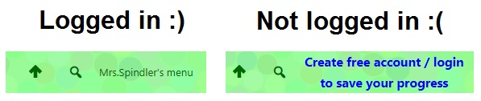

Unit 2: Intro to Python
Activity List: CSCircles
Python Programming
Software programming requires the use of a programming language that the computer can understand to provide instructions so the computer will do what the programmer intends. Programmers create software programs to create products (computer programs or apps)for users in order to solve a problem or complete a task using a computing device.
One language that is commonly used is called Python. Python is an easy to learn and use language that can still be used to create sophisticated programs for computers, web sites and mobile devices.
We will be using a special Web Based program from Waterloo University to learn the basics of programming using Python. The Computer Science Circles web site will allow you to start your studies in programming.
To prepare for this unit of the course you must complete the following steps:
- Go to the Computer Science Circles Site at http://cscircles.cemc.uwaterloo.ca/
- You must create a free account. The link to do this is at the top right corner of the page.

- Once your account is created you will receive an email notification. When the account is created go to your profile (click on your login name at the top right of the page and select profile.

- In the profile - under Account Management (scroll down!) beside Guru's Username - type in Mrs.Spindler (my login for the site). This will connect me to your progress.

REQUIRED Activities
Make sure that before you begin your Python tutorials, that you are LOGGED IN to your CSCircles account. Look at the top right corner of your screen to verify that you are logged in.
(It is possible to complete the activities without logging in, but I will be unable to give you credit for your progress. So LOG IN!)
Evidence of Learning
 Required CSCircles Modules
Required CSCircles Modules
You should complete the modules in order, as they are designed to build upon skills from previous modules. The following modules (with associated curriculum expectations & suggested pacing) are required:
- Day 1
- 0: Hello! (B1.1)
- 0: Bonjour
- 1: Variables (B1.2)
- 1:
xMarks the Spot - 1: Heads, Shoulders, Knees and Toes
- 1: Speed Calculator
- 1: Exchange Program
- 1E: Errors (B2.6)
- 1E: Summer
- 1E: Hello Joe
- 1E: Shopping
- Day 2
- 2: Functions (B2.3)
- 2: Min and Max I
- 2: Min and Max II
- 2: One Road
- 2: Two Roads
- 2: Sort of Strangeness
- 2X: Extra Practice (This one is challenging - you can move to the next section if you get stuck here, but come back later!)
- 2X: Growth Debugging
- 2X: Simplification
- 2X: Complication
- 2X: Payment Calculator
- 2X: Sorting Scramble
- Day 3
- 3: Comments and Quotes (B3.2)
- 3: Second Guessing
- 3: Escape Characters
- 3: The Great Escape
- 4: Types (B1.2)
- 4: Floating
- 4: Tasty Typecasting
- 5: Input (B2.3)
- 5: Echo
- Day 4
- 6: If (B2.4)
- 6: IHOPython
- 6: Unexpected Indent
- 6: Unexpected Unindent
- 6: Expected Indent
- 6: Proper Indentation
- 6: What's Your Sign?
- 6: Nested
ifs - 6: Age checker
- 6D: Design, Debugging and Donuts (B2.1)
- 6D: Timbits
- Day 5
- 7A: Strings (B2.2)
- 7A: Last Character
- 7A: String Shaving
- 7A: Heads and Tails
- 7A: Next Letter
- 7A: Pig Latin
- 7A: The Name Game
- Day 6
- 7B: Math (B1.4)
- 7B: Eggsactly
- 7B: Divisibility
- 7B: Pizza Circles
- 7B: Geometric Mean
- 7B: Order of Operations
- 7B: Skill-Testing Question
- 7B: A Feat With Feet
- 7B: Gravity
- Day 7
- 7C: Loops (B2.5)
- 7C: Countup
- 7C: One Triangle
- 7C: Square Census
- 7C: Skipping
- 7C: Finding Factors
- Day 8
- 9: Else, And, Or, Not (B1.6)
- 9: Absolute Value
- 9: First, Second, Third
- 9: 26 Letters
- 9: De Morgan's Law
- 9: Order of Operations
RECOMMENDED Activities
If you have finished ALL the activities above, you can try the next set of modules. Many of these are extra challenging, or teach topics for more advanced programming:
Recommended CSCircles Modules
Note: You can only recieve 'credit' for these activities if ALL the activities in the previous section are complete!
- 8: Remix
- 8: Python Adder
- 8: Substring Counting
- 8: Watch the Pendulum
- 8: Centering Text
- 8: Ending Time
- 8: Character Map
- 10: def
- 10: Cubism
- 10: In-n-Out
- 10: Rectangle
- 11A: Lower Case
- 11A: Lower-case Characters
- 11A: Lower-case Strings
- 11B: Variable Scope
- 11B: Inner and Outer
- 11C: Geometry
- 11C: Hypotenuse
- 11C: The Triangles are Right
- 11C: 2D Distance
- 11C: Secure the Perimeter
- 12: Tips
- 12: Alphabet Aerobics
- 12: Lucky Sevens
- 12: One None
- 13: Lists (Arrays)
- 13: Meta-Stuff
- 13: Monkey in the Middle
- 13: It's Natural
- 13: Palindrome
- 13: Product
- 13:
for in - 13: Mystery Function
- 13: à la Mode
- 14: Methods
- 14: The Replacements
- 14: Exact Postage
EXTENSION Activities
The last set of modules (15-18) are very advanced, and explore topics that you will see later in senior computer science courses. Students who are very curious about the world of computer science are encouraged to give them a try, but be aware they are well beyond the scope of this course!